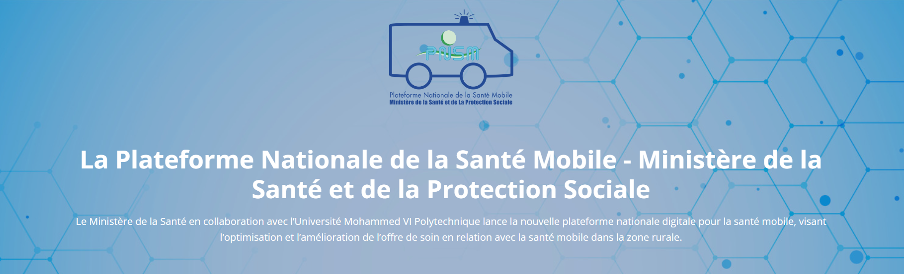

<div style="height: 55vh;">
  <mat-toolbar color="primary">
    <mat-toolbar-row>
      <button mat-icon-button (click)="sidenav.toggle()" fxShow="true" fxHide.gt-sm>
        <mat-icon>menu</mat-icon>
      </button>
      <span>PNSM</span>
      <span class="menu-spacer"></span>
      <div fxShow="true" fxHide.lt-md>
        <!-- The following menu items will be hidden on both SM and XS screen sizes -->
        <a routerLink="/home" mat-button>Home</a>
        <a routerLink="/login" mat-button>Login <span class="sr-only">(signUp)</span></a>
        <a routerLink="/aboutus" mat-button>About us</a>
        <a href="#" mat-button>Contact</a>
      </div>
    </mat-toolbar-row>
  </mat-toolbar>

  <mat-sidenav-container fxFlexFill>
    <mat-sidenav #sidenav>
      <mat-nav-list>
        <a (click)="sidenav.toggle()" href="" mat-list-item>Close</a>
        <a routerLink="/home" mat-list-item>Home</a>
        <a routerLink="/login" mat-list-item>Login <span class="sr-only">(signUp)</span></a>
        <a routerLink="/aboutus" mat-list-item>About us</a>
        <a href="#" mat-list-item>Contact</a>
      </mat-nav-list>
    </mat-sidenav>
    
  </mat-sidenav-container>

</div>
<br><br><br><br><br>
<div class="Tablecontainer ">
  <div class="card bg-grd p-2 fs-7 text-white fw-bold text-center haut3">
    Platforme nationale de la santé mobile
  </div>
  <div class=" haut2">
  Votre Progrès
  </div>
  <table class="table custom-table ">
    <thead>
      <tr>
        <th></th>
        <th>Action</th>
        <th>Remplissage</th>
      </tr>
    </thead>
    <tbody>
      <tr>
        <td>Population a couvrir </td>
        <td><button class="mybutton" routerLink="/populationCouvrir">Ajouter</button></td>
        <td><span class="espace">NaN</span></td>
      </tr>
      <tr>
        <td>Programme previsionel des UMM</td>
        <td><button class="mybutton" routerLink="/programmeRemplire">Ajouter</button></td>
        <td><span class="espace">NaN</span></td>
      </tr>
      <tr>
        <td>Situation des moyen de mobilité</td>
        <td><button class="mybutton" routerLink="/ressources">Ajouter</button></td>
        <td><span class="espace">NaN</span></td>
      </tr>
      <tr>
        <td>Ressources humaines à mobiliser</td>
        <td><button class="mybutton" routerLink="/ressourcesHumaine">Ajouter</button></td>
        <td><span class="espace">NaN</span></td>
      </tr>
    </tbody>
  </table>
</div>
<br><br><br><br><br><br><br><br>
